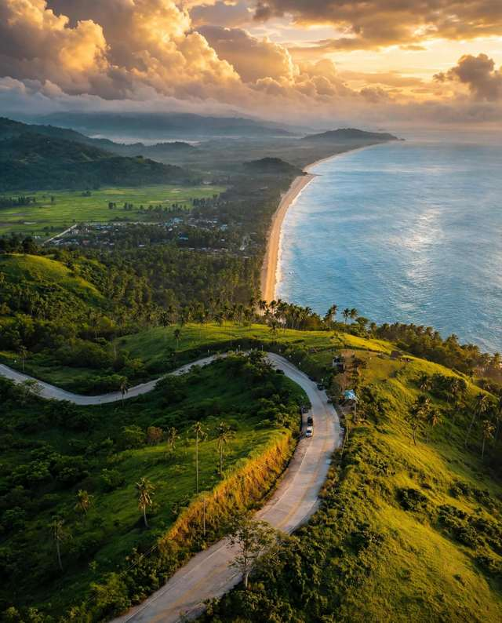

Most Palawan trips are planned around limestone cliffs and boat tours. San Vicente Long Beach asks for something else: time. It is one pale beach of about 14.7 kilometres on the west coast of the province, with coconut palms behind it, open sea in front, and very little to buy a ticket for.
This guide covers what the beach is actually like, how San Vicente, Long Beach and Port Barton differ, the routes in, where to base yourself, what to do with a few days, the visitor fee and the best months to go. Prices and schedules in this part of Palawan change, so use the figures below for planning and reconfirm them before you book.
The short version: stay two or three nights, sleep close to the stretch of sand you want to use, carry cash, and book transport to the right San Vicente. That last point is the easiest one to get wrong.

What Long Beach Is Like
Long Beach is not one compact resort strip. The sand runs for roughly 14.7 kilometres, passes through several barangays and is cut into separate sections by rocky headlands. The colour is closer to pale beige than powder white. Some sections sit near villages and small businesses, while others are mostly palms and open sand, so ask where your room sits before you book.
The coast faces west, which makes late afternoon the best hour of the day. Mornings are for walking. Midday on open sand can be hot with little shade, so a hat and a full water bottle matter more here than at a beach with a snack stall every fifty metres.
Expect quiet rather than empty. On most days you can walk a long way without meeting another group, but crowds depend on the season, the holiday calendar and which section you choose.
San Vicente, Long Beach and Port Barton Are Three Different Stops
San Vicente is the name of the whole municipality. The town proper, often written as Poblacion on tickets, has the local services. Long Beach is the long shoreline running through the western barangays. Port Barton is a separate fishing village on a calm bay, where most of the island-hopping boats and the guesthouse strip are found.
They are close enough to combine and far enough apart that a wrong booking costs you half a day. Van tickets from Puerto Princesa name the drop-off, so check whether yours says San Vicente, Poblacion or Port Barton. Port Barton is roughly three hours from Puerto Princesa by van, while the town and Long Beach take closer to four.
How to Get to San Vicente Long Beach
By Van or Bus from Puerto Princesa
The usual route is a van from the San Jose Terminal in Puerto Princesa, about four hours to San Vicente. A slower bus also leaves from the same terminal. Take an early departure so you reach your room with daylight left to sort out the last leg.
Road conditions and weather change the journey time, so treat four hours as a planning number. Message your guesthouse for the latest departure times a day ahead.
From El Nido
Vans also link El Nido and San Vicente, and direct vans to Port Barton take roughly four to five hours. Ask the provider where the service actually stops, since the town, Long Beach and Port Barton are separate drop-offs, and expect a short local transfer to your accommodation.
By Air
San Vicente has its own small airport, and the municipal tourism website lists direct flights on selected days, including a Cebu route. Flights into the airport have come and gone over the years, so check the airline's current schedule before building a trip around it, and keep the Puerto Princesa van as a backup.
Where to Stay Along the Beach
Choose the base by what you want your days to look like. A room near a Long Beach access point suits slow beach days and sunset walks. A room in the town area suits people who want shops, transport and a few restaurants close by. Port Barton makes sense if boat tours are the point of the trip and Long Beach is a day out.
Before booking, ask how far the room is from the beach access, where the nearest meal is, whether the property serves food, how you get a tricycle or transfer, and whether power and water run around the clock. Dining is not spread evenly along the shoreline, so do not assume a restaurant is a short walk away.
Bring cash for meals, transport and small purchases, because ATMs and card payments are limited outside the town. In Port Barton, power has long been restricted to the evening hours at places without a generator, so ask first if you need to charge devices or work. Book early for Christmas, New Year, Holy Week and long weekends.
What to Do on a Long Beach Stay
Walk and Watch the Sunset
Pick a section near your room and walk it early or late. Do not plan to cover all 14.7 kilometres in one outing. Wear shoes that cope with soft sand, carry water, and head back with enough light to find your way if your room is off the main road.
Hire a Motorcycle and Driver
A half-day beach hop is the easiest way to see more than one section. A local driver can take you along the road between access points, so you stop where the water looks inviting instead of walking the same stretch twice. Agree on the price and the hours before you set off.
Ask about Bato ni Ningning, a sandy viewpoint in Barangay Santo Niño with a wider look over the coast. Directions are easier from a local, and the path can be slippery after rain.
Island Tours and Port Barton
Boats from the municipality visit four or five nearby islands in a day, and the groups are smaller than the ones in El Nido. Confirm what the price covers, whether snorkelling gear and lunch are included, and whether any island charges its own entrance fee. Port Barton works as a day trip if you would rather not change rooms.
Swim with care. Waves, tides and currents shift with the day and the season, so ask your hosts which section is safe that morning and stay out of rough water.
Fees and Budget
San Vicente charges an Eco-Tourism Development and Management Fee of PHP 200 per visitor, domestic or foreign, with exemptions and discounts for some groups. The amount and rules can change, so check the municipal tourism office's travel guidelines before you go and keep the receipt with you.
Beyond that, the budget depends on how you arrive and where you sleep. Shared vans cost less than private transfers, simple guesthouses cost less than beachfront rooms, and island tours are the biggest optional spend. Ask operators for a written list of what the tour price includes, since meals, gear and entrance fees are handled differently from boat to boat. Keep a cash cushion for changes of plan.
Best Time to Go
The drier months, roughly November to May, bring the calmest seas for boats, and March to May is the hottest stretch. From around June the southwest monsoon and typhoon season can mean rougher water, and island tours get cancelled at short notice.
Check the forecast before you set out and again the night before a boat day. Leave a spare day before any flight home, because a cancelled tour or a slow road can use up a tight buffer. Outside Christmas, Holy Week and long weekends, the beach is more likely to be quiet.
A Three-Day Plan
Day 1: Arrive and Settle In
Take the morning van from Puerto Princesa and check in. Confirm meals and transport for the next day, then walk the stretch nearest your room before sunset.
Day 2: Beach Hop
Start with a long morning walk. Hire a driver for half a day along the road for swimming stops, Bato ni Ningning and lunch in whichever village you pass. Come back for the sunset.
Day 3: Boats or Onward
Book an island tour if the sea is calm, or move on to Port Barton or El Nido. Put the boat trip early in the day and avoid fixed commitments that evening.
Is San Vicente Long Beach Worth the Detour?
It is, if you want a beach with room to spare. Anyone after nightlife, a row of restaurants or a tour desk on every corner will find it thin. The planning is the price of entry: the right drop-off, a room close to the sand you want, cash in hand and a weather buffer.
Do that and it fits well between the busier stops on a Palawan route. For how it sits alongside the rest of the province, read about the quieter side of Palawan, compare El Nido, Coron and Puerto Princesa, and see the Underground River permit guide if Puerto Princesa is your first stop.

Comments
No comments yet. Been here recently? Share a tip or ask a question.
Leave a Reply